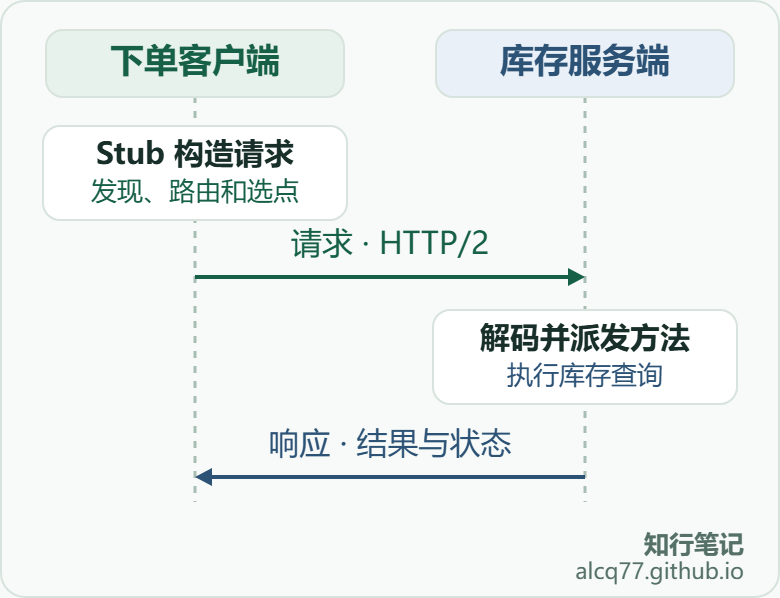
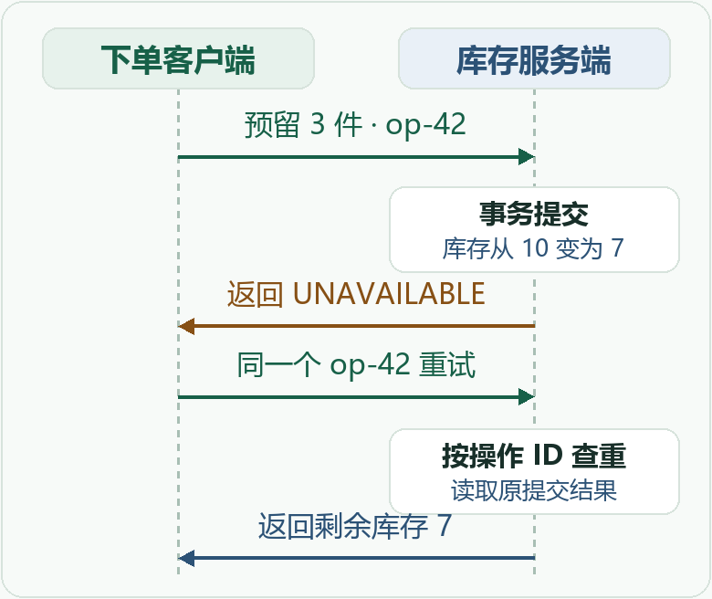

库存服务返回了超时，下单服务该不该再调一次？先弄清请求可能走到了哪一步。客户端排队时超时，库存服务可能连请求都没收到。库存事务提交后响应丢失，再扣一次就会出问题。RPC 排查最有用的信息，通常是请求卡在哪一段、服务端是否执行过，以及调用方还有多少时间。
| 正在解决的问题 | 从这里开始 |
|---|---|
| 想顺着源码理解远程调用 | 第 1 节：调用过程，第 6 节：Java gRPC 示例 |
| 出现超时、重试或重复写入 | 第 8 节：故障定位，第 11.1 节：本地复现 |
| 节点时好时坏、灰度流量跑偏 | 第 14 节：服务发现，第 16 节：路由 |
| 要扩容、滚动发布或切协议 | 第 19 节：业务分组，第 25 节：协议迁移 |
1. 一次 RPC 调用经过哪些地方

以 GetAvailability 查询为例，客户端把服务全名、方法和请求参数交给调用层。调用层读取目标地址，按流量规则筛选实例，再由负载均衡选择一个实例发出这次尝试。服务端根据方法全名定位处理器，解码后交给执行器，最后把业务结果或错误返回。长连接上的多次请求可能交错完成，自定义协议按请求 ID 关联响应，gRPC 在 HTTP/2 上按流区分调用。
故障时把一次逻辑调用和每次尝试区分开。一次调用重试两次就有三次尝试，可能去了不同节点，也可能走到了不同阶段。收到超时只能说明调用方在期限内没拿到结果。库存服务有没有执行、有没有提交，分别看服务端的执行记录和业务操作记录。
2. 协议怎么划分消息、兼容新旧版本
TCP 提供字节流。自定义协议可以用固定头加负载的形式，定义魔数、版本、消息类型、请求 ID、负载长度。先读齐头部，校验长度上限后再分配缓冲区，处理半包、多条消息连在一起和畸形长度。校验解压后的大小，序列化格式由双方约定，避免让对端指定任意本地类型反序列化。
假设头部固定为 16 字节，声明负载长度为 120 字节。第一次读了 80 字节，解码器留下尚未读全的数据。第二次又读到 200 字节时，先消费第一帧缺的 56 字节，再从余下数据解析下一帧。测试里把同一帧切在头部和负载的不同位置，另测两帧合并读取、未知版本、超长负载和读到一半断连。
协议演进先约定哪些信息可以忽略。例如可选扩展带类型和长度，旧实现可以跳过自己不认识的扩展。到期时间、身份校验等影响处理方式的必需能力要明确协商。任何一侧缺少必需能力时及时返回可诊断的错误，避免悄悄按旧语义执行。
gRPC 常在 HTTP/2 上运行。一个调用占用一个流，gRPC 消息还有自己的压缩标记和长度前缀。排查抓包时区分连接、HTTP/2 流和 gRPC 消息，一个 DATA 帧的边界不一定等于一条完整消息。HTTP 响应码是 200 时也要看最终的 grpc-status。压缩开关按真实负载评估，记录带宽、CPU 和 P99，小请求通常没有必要为节约少量字节支付压缩开销。gRPC over HTTP/2 协议
3. 序列化怎么选，字段变更怎么验证
序列化只负责把对象表示成可传输的字节。需要人工查看或已有 HTTP/JSON 客户端时，JSON 调试方便，但数字精度、日期格式和未知字段要约定。多语言 SDK 需要共享类型定义时，可以用 Protobuf 生成各端代码。从现有流量抽取小请求、大字段和批量请求，比较编码和解码耗时、内存分配和消息大小。二进制包更小，也可能因为多次缓冲区复制或压缩造成更高的 CPU 开销。
Protobuf 加字段时用新的字段编号，旧字段删除后把编号和名称加进 reserved，升级前跑旧客户端对新服务端、新客户端对旧服务端两组测试。即使能解码，也要验证字段缺省时的业务含义。比如新客户端增加仓库编号，旧服务端忽略它就可能扣到错误的仓库，路由或能力协商必须确保带仓库编号的请求由支持该语义的节点处理。Proto3 消息更新规则
| 兼容性用例 | 需要断言的结果 |
|---|---|
| 老客户端发送只有 SKU 的请求 | 新服务端沿用约定的默认仓库规则 |
| 新客户端指定东仓，目标节点只支持旧合同 | 调用层改选支持的节点，或返回明确错误 |
| 新服务端返回旧客户端未知的可选响应字段 | 旧客户端仍能读取已有字段，结果语义一致 |
| 消息超过单次大小限制 | 请求被拒绝，避免解码和解压无界分配 |
4. I/O 线程、长连接和背压
阻塞 I/O 的线程在等待读写时无法处理其他任务。NIO 可以靠少量事件循环管理许多连接，但读就绪只表示可以尝试读取，解码器仍要判断消息有没有收全。事件循环负责收发和派发，SQL、阻塞文件 I/O 和耗时回调交给有界执行器。一旦事件循环里执行了慢 SQL，同一个事件循环负责的其他连接也会受拖累。
调用方按目标复用 channel，避免每次都重新做 DNS、TCP 和 TLS。HTTP/2 单连接可以并发多个流，到达并发上限后新调用可能等待。遇到服务端执行很快、客户端仍超时，先核对连接建立、流排队和本地执行器等待，再决定扩大连接容量。持续推送的流式接口还要检查接收端处理速度。发送方在对方处理不过来时应减速或停止把消息塞进内存。gRPC 流控
5. 动态代理、Stub 和拦截器放在哪里
生成的 Stub 通过编译期生成的代码把接口方法转成一次远程调用。Java 动态代理一般在运行时用 InvocationHandler 取得方法和实参，再从缓存的方法描述构造请求。代理实例应本地处理 toString()、equals() 等对象方法。支持重载的自定义框架要用完整签名区分方法，避免只按名字找到错误实现。
拦截器适合做认证、trace 传播和计时。一次逻辑调用的日志放在重试之外，节点、耗时和传输错误按尝试记录。服务端收到请求后先做方法级鉴权，再进入业务处理。测试时检查本地方法不会发包、返回值和业务错误能完整映射、拒绝鉴权的调用没有进入业务方法。
6. 用 Java gRPC 跟一遍收发
把下面的定义放入已有 gRPC Java 工程的 src/main/proto/inventory.proto。生成的消息类和 InventoryGrpc 供两端使用。示例使用 Java 10 及以上的 var，替换成显式类型也可以。
syntax = "proto3";
package inventory.v1;
option java_multiple_files = true;
service Inventory {
rpc GetAvailability(GetAvailabilityRequest) returns (GetAvailabilityReply);
}
message GetAvailabilityRequest {
string sku = 1;
optional string warehouse_id = 2; // 可以区分未设置和显式空字符串
}
message GetAvailabilityReply {
int32 available = 1;
}
6.1 发起带 deadline 的调用
从上面的 .proto 生成 Java 消息类和 gRPC Stub，服务端继承生成的 InventoryImplBase 并注册到 Server。下例放在已有 gRPC Java 客户端里，channel 由客户端初始化并复用。
// 构造只读查询，指定 SKU 和仓库。
var request = GetAvailabilityRequest.newBuilder()
.setSku("SKU-1001")
.setWarehouseId("east")
.build();
// 在这次调用上设置 150 ms 的 deadline，通过生成的 Stub 发送请求。
var reply = InventoryGrpc.newBlockingStub(channel)
.withDeadlineAfter(150, java.util.concurrent.TimeUnit.MILLISECONDS)
.getAvailability(request);
跟源码时，可以在客户端拦截器、服务端拦截器和 getAvailability 实现各设一个断点。客户端先拿到方法描述和消息，再由调用层将消息交给传输。服务端按方法全名找到已注册的处理器，解码后派发到业务实现。验证超时时用测试环境让服务端延迟返回，观察客户端收到 DEADLINE_EXCEEDED，再检查服务端是否能及时停止可取消的工作。阻塞 Stub 只在允许等待的线程里使用。gRPC Java 基础教程
6.2 注册和实现服务端处理器
把以下实现放在服务端代码中，通过 ServerBuilder.addService(new InventoryService()) 注册。这里固定返回 7，方便先跑通收发和错误映射。
final class InventoryService extends InventoryGrpc.InventoryImplBase {
@Override
public void getAvailability(
GetAvailabilityRequest request,
io.grpc.stub.StreamObserver<GetAvailabilityReply> observer) {
if (request.getSku().isBlank()) {
observer.onError(io.grpc.Status.INVALID_ARGUMENT
.withDescription("sku is required").asRuntimeException());
return;
}
observer.onNext(GetAvailabilityReply.newBuilder().setAvailable(7).build());
observer.onCompleted();
}
}
先把 deadline 设宽，等 channel 就绪后发正常请求，确认收到 7。再发空 SKU，确认返回 INVALID_ARGUMENT。最后缩短 deadline 并注入业务延迟，核对服务端的开始和取消记录。Java 片段依赖生成类与已初始化的客户端和服务端，服务端的 isBlank() 要求 Java 11 及以上。
7. 框架扩展点怎么拆
把远程调用看成请求构造、选点、收发和执行四个环节。名称解析、路由、负载均衡、序列化和传输分别对输入输出负责。比如从加权轮询切到最少在途请求，只修改节点选择策略，方法描述、序列化和服务实现仍走同一条路径。拦截器负责通用的认证和观测，少依赖某种协议的具体缓冲区或实现类。gRPC 负载均衡扩展
服务端启动时建立方法到处理器的映射。处理器把解码后的请求交给业务执行器，结果返回后再由原协议编码。扩展点测试至少覆盖空节点列表、节点下线、并发回调、调用取消、未知方法和编码失败。把这些边界测清楚，再决定是否值得维护自研框架。
8. 线上 RPC 故障先查哪一段
按调用方法、目标实例和版本分组看，先对齐故障时间，再把一次逻辑调用拆成各次尝试。用 trace ID 找到两端记录，核对客户端取连接或排队时间、服务端入队和开始执行时间、下游耗时以及返回状态。日志中可以带请求 ID 和幂等键的脱敏值，指标标签使用服务、方法、状态、版本等低基数字段。
| 现象 | 先找什么证据 | 确认后怎么处理 |
|---|---|---|
| 客户端没有可用实例 | 查看客户端发现快照的版本、更新时间、路由分组和筛选后的实例数 | 恢复订阅或修正分组、权重、版本标签。保留已经验证过的上一份配置用于回退 |
UNAVAILABLE 集中在少数实例 |
核对连接失败、TLS 握手、就绪状态和发布记录。确认是选中了异常节点还是整个服务不可达 | 摘除坏节点或回退版本，同时观察剩余节点容量 |
DEADLINE_EXCEEDED，服务端没有开始执行 |
查客户端队列、连接建立、HTTP/2 流并发上限、服务端队列。先确认日志和采样是否足以判断 | 限制在途请求，缩短或清理过期排队，定位容量瓶颈 |
DEADLINE_EXCEEDED，服务端已经执行 |
从 trace 看数据库锁、连接池等待、慢查询或下游 RPC。写操作核对操作记录和提交结果 | 修复最慢阶段。写结果不明时，用原幂等键查状态或重试 |
RESOURCE_EXHAUSTED 或队列持续升高 |
区分配额拒绝、并发上限、消息大小限制和重试放大 | 先压住新增流量和重试，对照配额和负载看扩容或调整配置的效果 |
某版本返回 UNIMPLEMENTED 或解码错误 |
对照部署版本、方法名、字段编号、协议和入口地址 | 回退路由到兼容实例，跑双向兼容测试后再放量 |
| 连得上但 401、403 或对应 gRPC 状态 | 查入口与服务端身份、证书有效期、令牌目标受众和方法授权 | 修正身份或权限配置，复查有效和无效凭据各一次 |
8.1 从调用方核对域名和连接
在实际发起 RPC 的主机或容器里执行。示例使用 TLS 入口 inventory.example.com:443，替换为实际地址。
# 查看调用方环境通过系统解析器得到的地址
getent ahosts inventory.example.com
# 查看当前网络命名空间内到 443 端口的已建立 TCP 连接，再核对对端 IP
ss -nt state established '( dport = :443 )'
# 指定 SNI，验证入口证书链及域名，并通过 ALPN 请求 HTTP/2
openssl s_client -connect inventory.example.com:443 -servername inventory.example.com \
-verify_hostname inventory.example.com -verify_return_error -alpn h2 </dev/null
例如最后一条出现 ALPN protocol: h2 和 Verify return code: 0 (ok)，表示这次 TLS 探测协商了 HTTP/2，证书校验通过。还要用实际客户端核对方法、认证和调用结果。内网 CA 用 -CAfile 指向受信任的 CA 文件。旧版 OpenSSL 如果缺少相应选项，用具备同等校验能力的客户端探测。
安装排查工具
在有授权且软件源可用的 Linux 环境操作。Ubuntu／Debian 的 getent 来自 libc-bin，RHEL 系一般随 glibc-common 或 glibc 提供，通常随系统已有。
# Ubuntu／Debian 安装 ss 和 openssl
sudo apt install iproute2 openssl
# 使用 dnf 的 RHEL 系发行版安装同类工具
sudo dnf install iproute openssl
# CentOS 7 使用已有获准的软件源安装同类工具
sudo yum install iproute openssl
# 确认可在当前 Shell 找到这三个工具
command -v getent ss openssl
9. Deadline 怎么分配和向下游传递
入口确定整条请求的末期限。每跳取剩余时间，扣除本地工作和返回缓冲，再用余额限制下游。连接超时、单次尝试超时、整个逻辑调用 deadline 的作用不同。多次重试和退避都要算在同一个逻辑调用的期限内。服务端拿到请求时如果所剩时间无法完成工作，可以尽早返回，别让过期请求继续占着队列。
例如一次下单限时 300 ms。下单服务已花 40 ms，留 20 ms 组装结果，最多能给库存调用 240 ms。如果这个总预算内允许两次尝试，可以各给 100 ms，最多退避 20 ms，再留 20 ms 调度余量。第一次结束时若只剩 65 ms，而按测量判断第二次通常至少需要 80 ms，就停止重试。
客户端取消后，服务端要把信号传给自己启动的下游工作。检查阻塞 I/O、数据库语句和线程池任务是否真的有取消或超时机制。线程收到取消信号不保证数据库事务能回滚，已经提交的操作仍要靠业务状态确认。gRPC deadlines
10. 哪些错误可以重试
| 情况 | 处理 |
|---|---|
只读请求收到短暂的 UNAVAILABLE |
剩余预算足够时少量重试。若故障集中在单节点且框架支持重选，优先换候选节点 |
| 服务端提示配额或容量耗尽 | 先区分瞬时过载、配额和消息大小限制。按服务端信号退避或返回 |
| 写操作超时，调用结果未知 | 用原操作 ID 查询或走已验证的幂等重试 |
| 参数错、鉴权失败、方法不存在 | 检查调用或配置，原样重发不会解决问题 |
给可重试方法设置总次数、指数退避上限和随机抖动，限制每次退避前后还能发出的请求数。gRPC 重试策略按服务或方法设置，maxAttempts 包含首次请求。gRPC 已收到响应头后，调用通常已进入承诺状态，配置的重试不会继续为该调用尝试。不同 SDK 对退避和重新选点的支持有差异，按实际实现测。
例如 SDK 和代理各允许 1 次重试，一次逻辑调用最坏会带来 4 次服务端尝试。上线前用故障注入核对总尝试数、重试是否打到合适节点，以及总耗时是否仍受截止时间约束。流式调用想在中段恢复时，通常还需要应用层的游标、去重或重连约定。gRPC retry
11. 写操作超时后怎样避免重复执行
- 下单服务为一次库存预留生成操作 ID，首次调用、网络超时后的重试和后续查询都沿用它。
- 库存服务以
租户 + 操作类型 + 操作 ID做唯一键，同时记录关键业务参数的摘要。相同键却带不同 SKU 或数量时，返回明确冲突。 - 在同一数据库事务中写操作记录、预留库存和保存结果。并发重复请求由唯一约束串行化，按数据库的冲突语义回读已提交结果。跨系统副作用可通过事务 Outbox 加下游去重延续同一操作 ID。
- 如果预留成功但响应丢失，调用方用原键查状态或重发。同一个操作 ID 的两次并发调用、提交后丢响应、事务回滚后重试都应有测试。
幂等记录至少保留到允许重发的窗口结束。否则同一笔操作延迟到达时可能被当成新请求。若操作由后台异步完成，要约定处理中、已成功和已失败分别怎么查，以及失败是否允许重试。测试时先造一次“事务已提交但响应丢失”，再用同一操作 ID 重发，确认库存只减少一次。

11.1 本地复现超时和幂等重试
这个例子用 Python 运行真正的 gRPC 客户端和服务端。服务端只监听本机的临时端口，SQLite 库存从 10 开始，每次运行都在临时目录创建独立数据库。示例直接让第一次预留在数据库提交后返回 UNAVAILABLE，方便稳定复现“客户端没拿到成功结果、写入已经完成”。故障注入只用于本地实验。
准备 Python 环境
# 在空的实验目录里创建虚拟环境，依赖安装在此目录
python -m venv .venv
# Linux 或 macOS 下启用虚拟环境
source .venv/bin/activate
# 安装本例使用的 gRPC 运行库和代码生成工具
python -m pip install grpcio==1.85.4 grpcio-tools==1.85.4
Windows 下可以用 PowerShell 直接运行虚拟环境中的程序。
# 在空的实验目录里创建虚拟环境
python -m venv .venv
# 把依赖装进虚拟环境，下面的 python 命令也改用这个解释器
.\.venv\Scripts\python.exe -m pip install grpcio==1.85.4 grpcio-tools==1.85.4
另存下面的接口定义为 reservation_lab.proto。它与第 6 节的 Java 库存查询是独立的实验文件。
syntax = "proto3";
package rpc.lab;
service Inventory {
rpc SlowCheck(Empty) returns (Empty);
rpc Reserve(ReserveRequest) returns (ReserveReply);
}
message Empty {}
message ReserveRequest {
string operation_id = 1;
int32 quantity = 2;
}
message ReserveReply {
int32 remaining = 1;
}
# 从 reservation_lab.proto 生成消息类和 gRPC Stub，输出到当前实验目录
python -m grpc_tools.protoc -I. --python_out=. --grpc_python_out=. reservation_lab.proto
11.2 在一次数据库事务里完成扣减和去重
将下面的代码保存为 reservation_lab.py，与生成的文件放在同一个目录。第一次请求登记操作 ID、扣库存和保存结果都在同一次事务里。重放时对照数量，同一操作 ID 的请求参数必须一致。
import sqlite3
import time
from concurrent.futures import ThreadPoolExecutor
from contextlib import closing
from pathlib import Path
from tempfile import TemporaryDirectory
import grpc
import reservation_lab_pb2 as pb
import reservation_lab_pb2_grpc as service
class Inventory(service.InventoryServicer):
def __init__(self, db_path):
self.db_path = db_path
def SlowCheck(self, request, context):
time.sleep(0.6)
return pb.Empty()
def Reserve(self, request, context):
key, quantity = request.operation_id, request.quantity
if not key or quantity <= 0:
context.abort(grpc.StatusCode.INVALID_ARGUMENT, "invalid reservation")
with closing(sqlite3.connect(self.db_path)) as db, db:
# 从查重到写结果都要串行进入写事务，缩短事务内的工作。
db.execute("BEGIN IMMEDIATE")
existing = db.execute(
"SELECT quantity, remaining FROM reservation WHERE operation_id = ?",
(key,),
).fetchone()
if existing:
if existing[0] != quantity:
context.abort(grpc.StatusCode.ALREADY_EXISTS, "operation id reused")
return pb.ReserveReply(remaining=existing[1])
updated = db.execute(
"UPDATE stock SET remaining = remaining - ? WHERE remaining >= ?",
(quantity, quantity),
)
if not updated.rowcount:
context.abort(grpc.StatusCode.FAILED_PRECONDITION, "insufficient stock")
remaining = db.execute("SELECT remaining FROM stock").fetchone()[0]
db.execute(
"INSERT INTO reservation VALUES (?, ?, ?)", (key, quantity, remaining)
)
# 故障注入放在事务提交之后，模拟调用方收不到成功响应。
print(f"server commit operation_id={key} remaining={remaining}")
if key == "op-42":
context.abort(grpc.StatusCode.UNAVAILABLE, "response unavailable after commit")
return pb.ReserveReply(remaining=remaining)
def expect_error(call, request, timeout, expected):
try:
call(request, timeout=timeout)
except grpc.RpcError as error:
assert error.code() == expected, error
print(f"client status={error.code().name}")
else:
raise AssertionError(f"expected {expected.name}")
with TemporaryDirectory() as lab_dir, ThreadPoolExecutor(max_workers=2) as workers:
db_path = Path(lab_dir) / "inventory.sqlite"
with closing(sqlite3.connect(db_path)) as db:
db.executescript("""
CREATE TABLE stock (remaining INTEGER NOT NULL);
INSERT INTO stock VALUES (10);
CREATE TABLE reservation (
operation_id TEXT PRIMARY KEY,
quantity INTEGER NOT NULL,
remaining INTEGER NOT NULL
);
""")
server = grpc.server(workers)
service.add_InventoryServicer_to_server(Inventory(db_path), server)
port = server.add_insecure_port("127.0.0.1:0")
server.start()
try:
with grpc.insecure_channel(f"127.0.0.1:{port}") as channel:
grpc.channel_ready_future(channel).result(timeout=5)
stub = service.InventoryStub(channel)
expect_error(stub.SlowCheck, pb.Empty(), 0.1, grpc.StatusCode.DEADLINE_EXCEEDED)
request = pb.ReserveRequest(operation_id="op-42", quantity=3)
expect_error(stub.Reserve, request, 2, grpc.StatusCode.UNAVAILABLE)
replay = stub.Reserve(request, timeout=2)
assert replay.remaining == 7
print(f"client replay operation_id={request.operation_id} remaining={replay.remaining}")
conflict = pb.ReserveRequest(operation_id="op-42", quantity=4)
expect_error(stub.Reserve, conflict, 2, grpc.StatusCode.ALREADY_EXISTS)
with closing(sqlite3.connect(db_path)) as db:
remaining = db.execute("SELECT remaining FROM stock").fetchone()[0]
count = db.execute("SELECT COUNT(*) FROM reservation").fetchone()[0]
assert (remaining, count) == (7, 1)
print(f"database remaining={remaining} reservations={count}")
finally:
server.stop(grace=1).wait()
11.3 执行后看哪些证据
# 启动本地示例，依次验证请求超时、提交后失败、同键重放和同键异参
python reservation_lab.py
client status=DEADLINE_EXCEEDED
server commit operation_id=op-42 remaining=7
client status=UNAVAILABLE
client replay operation_id=op-42 remaining=7
client status=ALREADY_EXISTS
database remaining=7 reservations=1
SlowCheck 故意晚于 100 ms 的客户端期限，演示调用方先结束等待。库存写入则是另一种情况。服务端先有提交记录，客户端后看到 UNAVAILABLE。再次使用 op-42 时读回的是已保存的结果。最后一行同时核对了余额和记录数，说明库存只由 10 扣到 7 一次。换成不同的数量重用同一个键时，服务端拒绝这次冲突。生产服务还需要把幂等键限制在租户和操作作用域内。 gRPC Python 快速开始 · Python SQLite 事务控制
12. 异步 RPC 怎么管理在途请求
自研多路复用协议通常在发送前按请求 ID 登记待完成的 Future，响应按 ID 找回。写失败、超时、取消、连接关闭都要清掉条目。超时和响应可能同时到达，用原子移除让其中一方取得完成权。迟到响应单独计数。请求 ID 必须在关联范围内保持唯一，断线重建时也要防止旧数据误配给新请求。
调用方可以用 Future 或异步 Stub 并行查询两个互不依赖的仓库。提交前限制在途数，异步回调里避免等待其他 RPC，耗时处理交给业务执行器。若客户请求已经取消，应取消尚无用途的子调用。对照压测吞吐、P99、在途数和执行器拒绝量，排查“吞吐有提升，但尾延迟和内存突然上涨”的情况。
发送前注册 → 等待响应、超时、取消或连接失败 → 原子移除并完成 Future
└→ 后到的响应只做计数
13. 时间轮什么时候值得用
当在途请求很多又各有期限时，为每个请求开一个等待线程成本太高，高频全量扫描也会反复检查未到期的任务。时间轮按到期时间放入不同槽位。比如每格 10 ms、共 512 格，一圈覆盖 5.12 秒。更远的任务可记轮数或进入上层轮。底层每走一格只检查对应任务。
以当前时间为 0，110 ms 到期的请求应在第 11 个 tick 起检查。若期限落在两格之间，向后取整或再次核验单调时钟，别提前判超时。GC 或线程调度会让定时动作比理论 tick 更晚，因此业务代码仍须检查剩余预算。定时回调只做移除和通知，避免把 I/O 或回调业务阻塞在定时线程上。
测试集中到期、响应抢在到期前完成、取消与超时同时触发和线程暂停后的赶进度。观察超时任务积压和触发延迟。已经在使用框架内置定时器时，先用测量确认这里确实是瓶颈。
14. 服务发现与注册中心断连
实例注册地址、协议、版本和分组。调用方初次拿全量，随后订阅变更并维护本地快照。日常调用直接从快照选点，无需每次访问注册中心。要能看见客户端最新收到的版本、快照年龄、断连时间和候选节点数，才能区分“注册中心里有记录”和“客户端真的选得到”。
把注册数据的一致性和调用能否继续分开考虑。采用多数派提交时，失去多数派的一侧无法继续确认最新注册变更。允许各侧继续接受和返回注册数据，则需要处理网络恢复后的合并，以及临时出现的漏选或误选。调用方可以继续使用已收到的快照，在限定时间内访问仍健康的实例。若使用增量通知，订阅断开后从最近版本恢复，版本无法接续时重新拉全量；在变更尚未收敛时，用主动探测和被动摘除减少失败请求。etcd API 一致性保证
发布配置时明确空列表的含义。收到一份有效版本且明确为空，可能代表所有实例已撤销。订阅超时或解析失败表示未获得新快照。调用方分别按业务约定处理，尤其是权限撤销和租户隔离。测试注册中心失联期间摘除一个节点，检查旧快照上的失败能否被本地健康机制发现，恢复订阅后会不会把已删节点加回来。
15. 节点还在线，为什么应停止给它发请求
| 观察信号 | 能判断什么 | 典型处理 |
|---|---|---|
| TCP 连接状态、HTTP/2 PING | 连接是否还能通信 | 失败时重新建立连接或换节点 |
| 应用就绪状态 | 实例是否准备处理某个服务 | 未就绪时暂时从候选集中排除 |
| 真实调用的失败和延迟 | 业务处理是否在这个实例异常 | 按实例短时摘除，冷却后只放少量探测 |
例如某实例每隔几次就丢一次请求，按连续三次心跳失败摘除可能一直不触发。按实例统计短窗口内的超时比例和最小请求数，用被动摘除补上这类间歇故障。业务参数校验失败通常不记为节点故障。设置摘除数量上限、冷却和恢复门槛，避免全体实例在共享下游抖动时被依次摘光。复查每个实例的真实流量，看报错节点是否已降到预期的探测量。gRPC 健康检查 · gRPC keepalive
16. 路由怎样做灰度和就近访问
路由先圈定候选实例，再由负载均衡选一个。例如新版库存逻辑只对灰度租户开放，先用已验证的租户身份匹配路由，再从 version=v2 的健康实例中按权重选。匹配为空时按事先约定失败或回退。跨租户、跨环境或跨数据区域的边界不能靠负载均衡兜底。
一套规则可以依次匹配环境和权限边界、服务版本、区域和租户灰度。测试时用普通租户、灰度租户、缺失标签和目标为空各走一遍。上线后按规则版本观察命中数、候选为空次数和实际请求落点。回退时恢复上一版规则，让调用方重新拉取，再抽查流量是否回到旧版本。
17. 负载均衡怎么选，怎么确认是否有效
| 策略 | 适合的情况 | 容易踩到的问题 |
|---|---|---|
| 轮询或随机 | 实例容量和请求成本接近 | 到达的请求数接近，正在执行的工作量可能差很多 |
| 加权分配 | 节点规格不同或正在预热 | 静态权重需随实例状态调整，高权重节点异常会放大影响 |
| 最少在途或按延迟反馈 | 单次请求的耗时差异大 | 采样偏少时反馈抖动，刚恢复的节点可能突然吸走流量 |
| 一致性哈希 | 需要同一业务键尽量命中相同实例 | 热点键仍会打满单节点，缩容后要测映射变化和缓存命中率 |
排查“QPS 差不多，只有某台很忙”时，按实例看每秒请求数、在途数、P99 和 CPU。比如 A、B 每秒都收 100 个请求，但平均耗时分别是 20 ms 和 100 ms，稳态下它们平均在途大约是 2 和 10。先找清 B 是节点较慢还是恰好收到了重请求，再决定改权重、调整路由或拆分重任务。
18. 熔断、限流、并发限制各管什么
| 措施 | 主要解决的问题 | 检查点 |
|---|---|---|
| 限速 | 短时请求太多，或某个调用方超过配额 | 看按方法、租户和调用方的接收与拒绝量 |
| 限并发 | 慢请求占住线程、连接或内存 | 看在途量、队列等待和任务拒绝数 |
| 熔断 | 下游持续失败，调用方要快速释放资源 | 看关闭、打开、半开的转换，避免低流量误判 |
| 降级 | 高负载下暂时舍弃非必要工作 | 验证降级响应仍符合业务约定，例如保留下单所需字段 |
单机限流便宜，节点扩缩容或流量倾斜会让实际总配额变化。需要严格总配额时可把额度分配给各节点，或由共享限流服务裁决。共享限流会增加一次依赖，先约定该依赖失败时放行、拒绝还是退回本地额度。可以保留本地并发限制应对突发流量。
熔断阈值需要最小样本数。打开后按冷却时间进入半开，只放少数请求。半开请求的错误仍要区分下游异常和用户参数错误。验收时让库存服务慢下来，观察下单服务是否及时拒绝或降级，再取消故障看探测和恢复。压测同时记录原始请求数与尝试数，防止重试抵消限流效果。
19. 业务分组怎样隔离和临时扩容
下单和离线盘点按服务与分组发现不同实例，分别配置流量上限和执行资源。若两组共享数据库，仍需限制各自占用的连接数或查询并发。核心组可以配置限额明确的备用组，在主组不可用且数据权限允许时切换。开发机和测试环境用不同注册命名空间，避免开发机临时启动的同名服务接到联调流量。
19.1 动态调整共享实例
盘点组突然缺容量时，可以把已预热的共享实例临时加入该组。先确认服务端能接受新分组，再登记带版本的分组变更。追加成员要考虑实例同时接两组流量的上限，替换成员也要确认原组剩余容量。
操作顺序是确认健康容量、登记变更、核对调用方候选名单、逐步加权。恢复时先把临时权重降到零，等在途请求排空，再移除成员。每一步以流量和分组错误数核验。只改注册中心而服务端仍按旧分组校验，会出现“能发现节点，调用却被拒绝”的情况。
20. 新实例怎么就绪、预热和放量
进程启动、端口监听、应用就绪和可承担正常流量各有判断条件。先加载配置、校验必要依赖并预热连接池或热点数据，达到就绪条件后才让入口选到新实例。预热请求使用测试数据或只读操作。接真实流量后，可以从较低权重开始，按错误率、P99、排队和资源占用逐步提高。
例如 10 台实例滚动更新，若重启 5 台会让剩余 5 台超过已验证容量，就减小批次或先加容量。上一批达到预期吞吐和延迟，再发布下一批。新实例就绪超时、错误集中在新版本或剩余容量不足时停止放量，保留旧版本接流。
21. 停机前怎么摘流和排空
- 把实例设为不就绪或降到零权重，从入口和服务发现的候选中移出。已有长连接的客户端可能还存着旧名单，留出传播时间并检查实例的新请求量。
- 停止接受新 RPC，等待已开始的调用在关停时限内结束。长流要有重连和续传安排。仍可能碰到旧路由的请求，返回调用方能正确识别的状态。
- 关停期限到达后按策略强制退出，记录尚未完成的操作。实例恢复上线后再按就绪和预热步骤接流。
排空期内测试一条短调用和一条长流。观察新流量能否去别的实例、短调用能否正常结束、长流能否恢复。容器或服务管理器的强杀期限需覆盖应用的摘流传播和排空时间。gRPC 优雅停机
22. 调用身份、授权和服务注册如何保护
TLS 校验服务端身份并加密传输，mTLS 还可以让服务端验证调用方身份。身份验证通过后，再按调用方身份、方法和资源做授权。例如下单服务可查库存和预留库存，报表服务只可查询。跨入口透传业务身份时，服务端只信任经过验证的令牌或来自受信任代理的身份，拒绝外部随意填入的身份字段。
注册中心也需要访问控制。限制服务账号能写哪些服务名、环境和分组。否则错误注册或配置误改会把调用方指向不该访问的目标。地址从注册中心得到后，客户端仍要验证目标服务身份。日志保留必要的调用身份和决策结果，令牌、证书私钥和完整敏感参数不落日志。
验证时分别使用正确身份、有效但没有方法权限的身份和不受信任的证书。对照 UNAUTHENTICATED、PERMISSION_DENIED 和握手失败发生在哪一层。证书轮换测试要覆盖旧新证书重叠期和新建连接，长连接还需考虑何时重新握手。gRPC 认证 · gRPC 状态码
23. 怎样录制和回放真实流量
- 录制。 从受控的 RPC 拦截器按比例采样，记录方法、协议版本、脱敏后的入参、结果或状态、耗时。异步交给有界缓冲写出，缓冲满时舍弃样本并计数。限时录制，约定数据的访问和保留期限。
- 回放。 把待测服务连到隔离存储和测试下游。任何会写库存、支付或发消息的方法，要把副作用指向隔离目标。异步请求有顺序依赖时，按业务键保留必要顺序。不要把录下的令牌直接拿去调用。
- 比对。 从判断业务结果需要的字段入手。例如库存查询比较 SKU、仓库和可用数量，忽略每次生成的 trace ID。对时间、随机数和环境数据的差异设明确规则。再比较状态码、P95/P99、执行耗时以及失败比例。
- 复查。 将集中出现的差异归到方法和输入条件，先用单条样本重现，再扩大样本范围。回放比例和速率按隔离环境容量调整。
以只读查询先开始比较容易。要验证预留库存，则为每轮回放恢复可控的初始库存，再检查库存变化、操作记录和出站消息，光比较返回值容易漏掉副作用。
24. 没有生成 Stub 时怎么调用
调试工具或协议网关可以用描述符动态构造请求。需要知道目标地址、完整的服务和方法名、字段定义，以及要带的认证信息。内部框架的泛化调用还可能需要分组和参数类型，用完整签名分辨重载。服务端按已有的接口定义校验并构造入参，泛化入口照常执行权限、限流和大小校验。
下面用第 6 节的 inventory.proto 调用测试服务。TLS 入口替换为实际地址，例子假设已通过测试环境的访问控制。服务端没有开启反射时，从受控渠道取得相应版本的 .proto 文件。
# 使用本地接口定义调用只读库存查询，最多等待 2 秒
grpcurl -max-time 2 -import-path ./src/main/proto -proto inventory.proto \
-d '{"sku":"SKU-1001","warehouseId":"east"}' \
inventory.example.com:443 inventory.v1.Inventory/GetAvailability
按第 6 节的示例服务端，预期响应包含 "available": 7。如果命令报告找不到方法，核对当前节点的部署版本和完整方法名。如果命令缺少反射信息，用上面的 -proto 手动提供版本匹配的接口定义。把这条命令放到调用方所在环境，可以继续验证 TLS 已建立后是否真的能调通业务方法。grpcurl 文档 · gRPC 服务端反射
安装 grpcurl
从项目发布页选择与操作系统和 CPU 架构匹配的归档，校验发布页提供的校验信息，解压后将可执行文件放进 PATH 下的用户目录或获准的共享工具目录。内网使用单位审核过的同版本安装包。 grpcurl 发布页
# 确认当前 Shell 能找到 grpcurl
command -v grpcurl
# 确认可执行文件能运行并显示版本
grpcurl -version
25. 新旧 RPC 协议怎么平滑迁移
先列出客户端、服务端和协议的组合。服务端同时暴露新旧入口，把请求转换为内部统一的调用对象，再进入同一份业务实现。适配层保留入站协议，按该版本的格式编码响应。若共用端口，要有可靠的识别规则，例如自定义协议约定的互斥魔数。用不同端口或入口也能避免解码歧义。
| 发布步骤 | 验收 | 回退 |
|---|---|---|
| 先部署双协议服务端 | 旧调用方仍能完成读写，新协议可单独验证 | 保留旧入口与原路由 |
| 新客户端小比例调用 | 对比结果、错误映射、取消和消息大小边界 | 切回旧协议，沿用原操作 ID |
| 按调用方扩量 | 按协议和客户端版本统计流量，检查总尝试数 | 将异常调用方单独切回 |
| 移除旧协议 | 旧流量归零并度过约定的回退窗口 | 按预案恢复双协议部署 |
治理能力可以在 SDK 或服务网格里实现。迁移时把路由、认证、限速和重试逐一找出，明确每段实际由谁执行。检查两层都启用重试、代理重启或错误映射变化时，业务行为是否仍一致。协议切换还要关注服务端校验的身份和分组，避免新旧入口出现权限差异。
26. 实战复盘：下单链路频繁超时
假设下单成功率下跌，库存查询的 P99 从 60 ms 升到 280 ms，库存服务的执行 P99 仍约 40 ms。按以下顺序确认。
- 按调用方、方法和库存实例拆指标。若超时只集中在盘点开始后，先查下单和盘点是否还共享同一个实例池或资源池。
- 选一条超时 trace。示例中客户端等待 10 ms，服务端排队 215 ms，执行 35 ms，指向服务端排队。再查看执行器队列、在途量和数据库连接池，找出首先达到上限的资源。
- 比较原始请求次数和总尝试数。若每秒 1,000 次逻辑调用产生 1,700 次尝试，继续扩大重试会把压力推回库存服务。先压低盘点流量和重试，再决定是否隔离资源或扩容。
- 复查下单成功率、P99、库存队列和每次调用的平均尝试数。抽查超时的写入，确认同一个操作 ID 只有一条预留记录。
如果停止盘点流量后队列仍高，再分实例观察。个别节点仍异常时检查发布版本、线程池和连接池，对异常节点摘流。所有节点同时慢时，先看共享数据库和下游。扩 RPC 实例之前校验它会不会同时放大数据库连接数，把瓶颈转移到数据库。
26.1 对照同一条 trace 的两端记录
下面是示意日志。trace 贯穿一次下单，attempt 区分库存调用的每次尝试。用每个进程测得的耗时判断所在阶段，避免直接拿两台机器的墙钟相减。
checkout trace=92d1 attempt=1 phase=send target=inventory-02 client_wait_ms=10
inventory trace=92d1 attempt=1 phase=handler_start server_queue_ms=215
checkout trace=92d1 attempt=1 phase=end rpc_ms=250 status=DEADLINE_EXCEEDED
inventory trace=92d1 attempt=1 phase=handler_end handler_ms=35
这组数据里库存处理只花了 35 ms，但服务端排了 215 ms。库存已经进入业务方法，单查 DNS 和端口解释不了这次超时。先看相同实例上的执行器队列和数据库连接等待。如果每条 trace 都是 client_wait_ms 高而库存没有入队记录，就改查客户端连接与并发流。若库存有 operation_id 的提交记录但调用方仍超时，按这个 ID 查业务结果。
| 指标示例 | 限制盘点流量前 | 限制后 | 怎样判断 |
|---|---|---|---|
| 库存服务排队 P99 | 220 ms | 24 ms | 队列拥塞明显缓解 |
| 库存业务执行 P99 | 41 ms | 39 ms | 处理本身几乎没变 |
| 每次库存调用的平均尝试数 | 1.70 | 1.04 | 重试放大减少 |
| 下单服务成功率 | 96.4% | 99.8% | 业务恢复，再观察高峰能否保持 |
这些值用于示范验证顺序。实际复查时用同类流量、相近窗口和同一组实例比较。只看到超时数下降，还需要确认原始流量和成功率，避免把请求更早被拒绝误认成恢复。
27. RPC 变更上线前怎么验收
| 要验证的变化 | 在测试环境怎么做 | 预期结果 |
|---|---|---|
| 协议或字段变更 | 用新旧客户端交叉调用，补拆包、大包和非法版本用例 | 支持的组合结果一致，拒绝的请求有明确错误 |
| 超时和重试策略 | 注入慢响应、失联和提交后丢响应 | 尝试次数和总期限符合约定，写操作没有重复 |
| 发现、路由与分组 | 断开订阅，变更分组，再恢复 | 快照按策略收敛，流量留在允许的候选集 |
| 启动与停机 | 让实例从未就绪到预热放量，再带在途请求关停 | 新流量正常迁移，短调用有机会结束，长流能恢复 |
| 调用身份和回放 | 测有效与越权调用，回放带副作用的方法 | 权限正确生效，回放结果可比且测试写入留在隔离环境 |